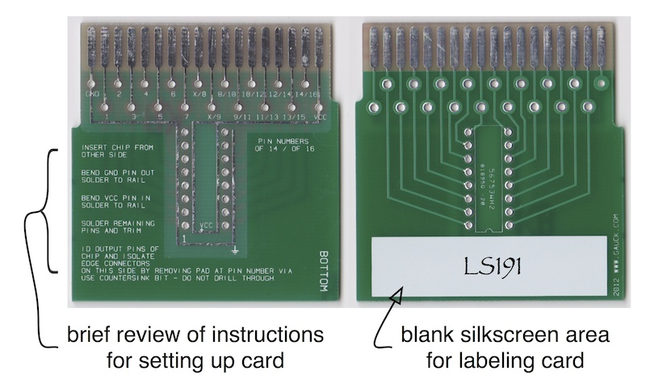
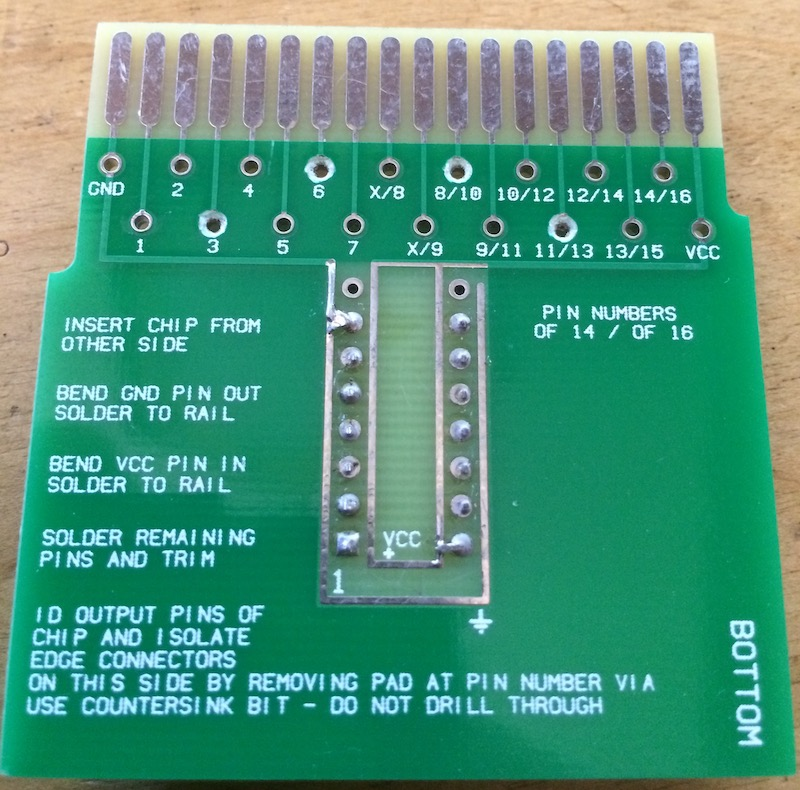
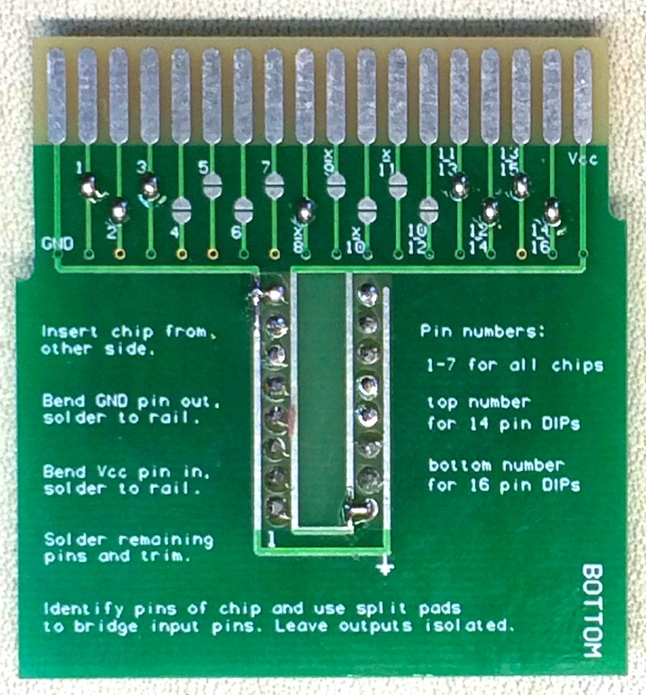
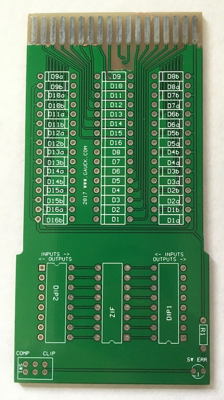

{kind=link}

HP 10529a Comparator page
Manuals: these are new, better than commonly available scans of the original manuals.
Operating and Service Manual PDF
Operating and Service Manual Supplement PDF
Here are some more scans from the orginal manuals.
16 channel cards: these are cards I reproduced to be directly compatible with the originals. I have made the Gerber files free so you can order your own.

Original drill style. Here is an example of one configured for a 74LS08, with the rings for output pins 3, 6, 8 and 11 isolated:

Solder bridge style. Instead of breaking continuity for output pins, the split pads are bridged for input pins. Here is an example:

Universal (DIP switch) card. With a ZIF socket in the middle and two banks of DIP switches on either side, this card allows configuration on the fly. Prototype shown below; final version fixes the mess at the top.

20 channel cards: these are for use with the expanded 20 channel version of the comparator I made.
Drill style.


Gerbers for the main PCB are now available on the honor system: if you make some for yourself please send me a few bucks. If you make a batch to distribute to others, send me an amount proportional to the number you sell.